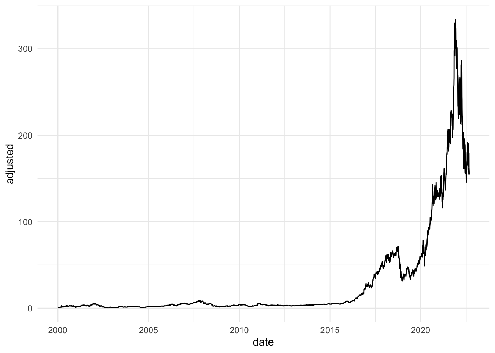
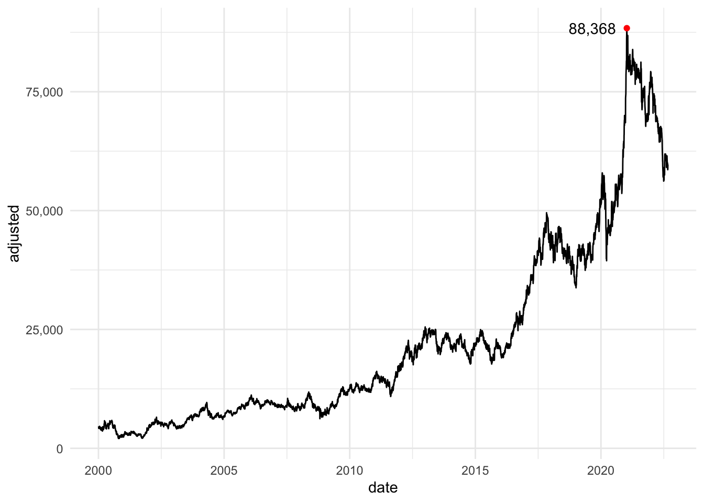

tidyquant package

R을 활용해 주식을 분석하는 방법엔 다양한 선택지가 있습니다. 주식정보 사이트에서 데이터를 크롤링해 분석하는 방법, 그리고 패키지를 활용하는 방법 등… R의 퀀트 분석에서 가장 유명한 패키지는 아마 quantmod package일 겁니다. quantmod package를 이용하면 주식, 환율, 원자재 등 다양한 경제 데이터를 활용해 분석할 수 있습니다. 하지만 오늘은 tidyquant package를 활용해 퀀트 분석을 정리해보려고 합니다.
tidyquant package는 zoo, xts, quantmod, TTR 등의 정량 데이터 및 시계열 데이터 분석 패키지를 통합해 제공해주고 있습니다. 거기에 패키지 이름에서 알 수 있듯 tidyverse 생태계의 도구를 사용해서 퀀트 분석을 할 수 있도록 설계되어 있죠. ggplot2를 이용한 시각화도 물론 가능합니다. 그럼 본격적으로 tidyquant package를 이용해 퀀트 분석을 시작해보겠습니다.
주식정보 불러오기
우선 tidyquant package를 설치해야겠죠? install.packages("tidyquant")를 입력해 tidyquant package를 설치합니다. 설치된 패키지를 불러옵시다. 거기에 tidyverse까지 함께 불러오겠습니다.
tq_get()
tq_get() 함수는 주식 관련 정보를 불러오는 가장 기본 함수입니다. get에 어떤 매개변수를 넣느냐에 따라 어느때는 주식정보를 얻을 수 있고, 또 어느때는 원자재 데이터를 가지고 올 수 있습니다. tq_get()함수의 주요 데이터 소스는 아래와 같습니다.
| 데이터 소스 | 데이터 |
|---|---|
| Yahoo Finance | 기본적인 주가 정보는 Yahoo Finance의 API를 활용합니다 |
| FRED | 금리, 원자재 등 경제 관련 다양한 데이터는 세인트루이스 연준에서 제공하는 FRED(Federal Reserve Economic Data)를 활용합니다 |
| Quandl | 경제, 에너지 등의 데이터를 다루는 캐나다의 데이터 공유 플랫폼 회사 Quandl의 금융 API를 활용합니다 |
| Tiingo | 주가 데이터, 코인 데이터 등을 제공해주는 Tiingo API도 사용할 수 있습니다 |
| Alpha Vantage | Tiingo와 비슷하게 주가, 코인 데이터 등을 제공해주는 Alpha Vantage API를 활용할 수 있습니다 |
| Bloomberg | 블룸버그 경제 API도 사용할 수 있는데, 이 API는 유료 계정이 있어야 사용 가능합니다 |
Yahoo Finance부터 Bloomberg까지 다양한 매개변수가 있지만 이번 포스트에선 주가 정보를 불러오는 것에 집중해보겠습니다. 주가 정보 데이터는 Yahoo Finance에서 가져옵니다. 함수에 입력할 변수들도 간단합니다. 원하는 회사의 종목명과 시점만 적어주면 끝이죠. 예를 들어 2000년 1월 1일부터 2022년 8월 31일까지 엔비디아의 주가를 불러와본다고 해 봅시다. 엔비디아의 종목명은 NVDA이고, 주식 가격을 불러오기 위해 get에 넣을 매개변수는 stock.prices 입니다.
tq_get("NVDA",
get = "stock.prices",
from = "2000-01-01",
to = "2022-08-31")# A tibble: 5,702 × 8
symbol date open high low close volume adjusted
<chr> <date> <dbl> <dbl> <dbl> <dbl> <dbl> <dbl>
1 NVDA 2000-01-03 0.984 0.992 0.919 0.975 30091200 0.895
2 NVDA 2000-01-04 0.958 0.961 0.901 0.949 30048000 0.871
3 NVDA 2000-01-05 0.922 0.938 0.905 0.918 18835200 0.843
4 NVDA 2000-01-06 0.918 0.918 0.823 0.858 12048000 0.788
5 NVDA 2000-01-07 0.854 0.882 0.841 0.872 7118400 0.801
6 NVDA 2000-01-10 0.875 0.938 0.859 0.901 23985600 0.827
7 NVDA 2000-01-11 0.896 0.906 0.865 0.865 14812800 0.794
8 NVDA 2000-01-12 0.865 0.866 0.831 0.842 12355200 0.773
9 NVDA 2000-01-13 0.841 0.885 0.831 0.878 13219200 0.806
10 NVDA 2000-01-14 0.891 0.952 0.888 0.915 60456000 0.840
# … with 5,692 more rows짜잔~ 함수를 돌리면 tibble 형태의 데이터가 불러와집니다. 총 8열의 데이터에는 개장 시점의 가격부터 일일 거래량까지 기본적인 주식 정보가 담겨 있습니다. adjusted 열에는 주식 분할 및 배당 등 시장이 마감된 이후 주가에 영향을 줄 수 있는 변수까지 적용된 수정 가격이 들어가 있습니다.
해외 주식만 가능한 건 아닙니다. 물론 우리나라 주식도 가능하죠. 이번엔 2000년 1월 1일부터 2022년 8월 31일까지 삼성전자의 주식 정보를 가져와 보겠습니다. Yahoo Finance에서 삼성전자의 종목명은 005930.KS 입니다. 입력하면 마찬가지로 tibble 형태의 삼성전자 주가 데이터를 불러올 수 있습니다.
tq_get("005930.KS",
get = "stock.prices",
from = "2000-01-01",
to = "2022-08-31")# A tibble: 5,690 × 8
symbol date open high low close volume adjusted
<chr> <date> <dbl> <dbl> <dbl> <dbl> <dbl> <dbl>
1 005930.KS 2000-01-04 6000 6110 5660 6110 74195000 4623.
2 005930.KS 2000-01-05 5800 6060 5520 5580 74680000 4222.
3 005930.KS 2000-01-06 5750 5780 5580 5620 54390000 4253.
4 005930.KS 2000-01-07 5560 5670 5360 5540 40305000 4192.
5 005930.KS 2000-01-10 5600 5770 5580 5770 46880000 4366.
6 005930.KS 2000-01-11 5820 6100 5770 5770 59745000 4366.
7 005930.KS 2000-01-12 5610 5740 5600 5720 29220000 4328.
8 005930.KS 2000-01-13 5600 5740 5560 5710 41190000 4321.
9 005930.KS 2000-01-14 5720 5880 5680 5830 49375000 4412.
10 005930.KS 2000-01-17 6000 6180 5920 6100 63505000 4616.
# … with 5,680 more rows주가 시각화
엔비디아 주가 데이터(조정가)로 간단히 그래프를 그려보겠습니다.
NV_prices <- tq_get("NVDA",
get = "stock.prices",
from = "2000-01-01",
to = "2022-08-31")
ggplot(NV_prices) +
geom_line(aes(date, adjusted), color = "black") +
theme_minimal()
이번엔 삼성전자 주가 데이터로 그래프를 그려보겠습니다. 이번에는 최고가도 표시해봤습니다.
library(scales)
SE_prices <- tq_get("005930.KS",
get = "stock.prices",
from = "2000-01-01",
to = "2022-08-31")
ggplot(SE_prices) +
geom_line(aes(date, adjusted), color = "black") +
geom_point(data = subset(SE_prices, adjusted == max(adjusted)),
aes(date, adjusted), color = "red") +
geom_text(data = subset(SE_prices, adjusted == max(adjusted)),
aes(date - 500, adjusted, label = scales::comma(adjusted)))+
scale_y_continuous(labels = comma) +
theme_minimal()